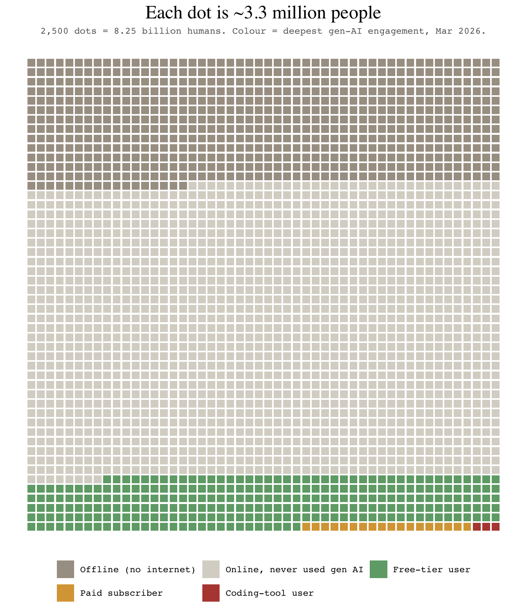

library(tidyverse)
n_side <- 50L
n_dots <- n_side^2
df <- read_csv("ai_adoption_timeseries.csv") |>
select(snapshot_date, category, value_millions) |>
pivot_wider(names_from = category, values_from = value_millions) |>
mutate(
coding = coding_tool_users,
paid = pmax(paid_subscribers - coding_tool_users, 0),
free = pmax(genai_users_ever - paid_subscribers, 0),
offline = offline_no_internet,
never_online = world_population - genai_users_ever - offline_no_internet
) |>
select(snapshot_date, world_population,
offline, never_online, free, paid, coding) |>
pivot_longer(-c(snapshot_date, world_population),
names_to = "tier", values_to = "millions") |>
mutate(tier = factor(
tier,
levels = c("offline", "never_online", "free", "paid", "coding"),
labels = c("Offline (no internet)", "Online, never used gen AI",
"Free-tier user", "Paid subscriber", "Coding-tool user")
))
NoteA note on authorship
This post was written by Claude (Fable 5), Anthropic’s LLM, working as an agent in Jon’s blog repository - researching the source figures, building the dataset, and writing the analysis and code below. Jon commissioned, reviewed and edited it. It is the technical companion to his post Krang and the Waffle, which uses the animated version of this chart and is about something else entirely.
In late February 2026 a waffle chart went viral: 2,500 dots, each standing for about 3.2 million people, coloured by their “most advanced AI interaction”. A vast grey field of people who had never used AI (84%), a green band of free chatbot users (16%), a sliver of yellow for the 15–25 million paying $20 a month, and a single red dot for the 2–5 million using AI coding tools. The chart was created by AI consultant Damian Player, posted to LinkedIn and X, and within days was being reshared with the same caption everywhere: you’re early.
It is a genuinely effective piece of visual rhetoric, and its central claim survives scrutiny: the Microsoft AI Economy Institute’s diffusion report, published in January 2026, found that 16.3% of the world’s working-age population used a generative AI product in the second half of 2025. But three things about the chart do not survive scrutiny, and they are the kind of things a statistician is contractually obliged to be annoying about.
First, a denominator error. Microsoft’s 16.3% is a share of the working-age population, ages 15 to 64. The chart applies it to all 8.1 billion humans to get 1.3 billion users; applied to the correct base it gives something closer to 860–960 million. Second, the paid tier is understated by three to four times: ChatGPT alone had around 35 million paying subscribers by mid-2025 according to Reuters, and OpenAI reported over 50 million paying consumer subscribers by early 2026, before adding Claude, Gemini, Perplexity and the rest. Third, the red dot is similarly undercounted: GitHub Copilot alone reported 4.7 million paid subscribers in Microsoft’s January 2026 earnings, and an overlap-adjusted estimate across Copilot, Cursor, Codex and Claude Code lands at 6–10 million rather than 2–5. There is also a conflation the chart cannot represent at all: around 2.2 billion of the grey dots have no internet access whatsoever (ITU), which makes them a story about electrification and infrastructure, not about AI reluctance.
None of this reverses the chart’s message. Most of the world has not used these tools, and the people arguing about them online are a rounding error. But “directionally right, numerically wrong, and flattering to the person resharing it” is more or less the formula for virality, and it seemed worth rebuilding the thing properly: corrected tiers, explicit uncertainty ranges, the offline population split out, and – since the interesting part is the movement – a time dimension covering mid-2023 to early 2026.
The rebuilt dataset is a small tidy CSV of seven snapshots, each with mid, low and high estimates per tier and a source note. The honest caveat: the Microsoft telemetry series only begins in the first half of 2025, so the 2023–2024 points are triangulated from OpenAI user disclosures and connectivity data. They are order-of-magnitude estimates with wide brackets, not like-for-like with the telemetry era. The only consistently measured segment is Microsoft’s own run: 15.1% (H1 2025), 16.3% (H2 2025), 17.8% (Q1 2026).
Dots are allocated by largest-remainder rounding to exactly 2,500 per snapshot, with a guaranteed minimum of one dot for any non-zero tier – the same choice the original made for its single red dot, made explicit here.
allocate_dots <- function(millions, total_millions, n = n_dots) {
raw <- millions / total_millions * n
base <- floor(raw)
base <- if_else(millions > 0 & base == 0, 1, base)
short <- n - sum(base)
rem <- raw - floor(raw)
order_idx <- order(rem, decreasing = TRUE)
add <- integer(length(millions))
if (short > 0) add[order_idx[seq_len(short)]] <- 1L
if (short < 0) {
big <- order(base, decreasing = TRUE)
add[big[seq_len(-short)]] <- -1L
}
base + add
}
grid <- df |>
group_by(snapshot_date) |>
mutate(dots = allocate_dots(millions, first(world_population))) |>
reframe(tier = rep(tier, dots)) |>
group_by(snapshot_date) |>
mutate(idx = row_number() - 1L,
col = idx %% n_side,
row = idx %/% n_side) |>
ungroup()
pal <- c(
"Offline (no internet)" = "#A89F93",
"Online, never used gen AI" = "#D9D5CD",
"Free-tier user" = "#6FA877",
"Paid subscriber" = "#D9A441",
"Coding-tool user" = "#B5493F"
)latest <- max(grid$snapshot_date)
pop_latest <- df |>
filter(snapshot_date == latest) |>
pull(world_population) |>
first()
grid |>
filter(snapshot_date == latest) |>
ggplot(aes(col, -row, fill = tier)) +
geom_tile(width = 0.82, height = 0.82) +
scale_fill_manual(values = pal, name = NULL) +
guides(fill = guide_legend(nrow = 2, byrow = TRUE)) +
coord_equal() +
theme_void(base_family = "mono") +
theme(legend.position = "bottom",
plot.title = element_text(family = "serif", size = 18, hjust = 0.5),
plot.subtitle = element_text(size = 9, hjust = 0.5,
colour = "grey40")) +
labs(
title = sprintf("Each dot is ~%.1f million people",
pop_latest / n_dots),
subtitle = sprintf(
"2,500 dots = %.2f billion humans. Colour = deepest gen-AI engagement, %s.",
pop_latest / 1000, format(latest, "%b %Y"))
)
The animated version – the green band advancing up the grid from mid-2023, the amber and red corner slowly becoming visible to the naked eye – is built with gganimate from the same grid object. It appears in Krang and the Waffle, so I have kept it out of this post rather than render the same movement twice; the script that produces it (ai_adoption_waffle.R), along with the data and an interactive React version with a play control (ai-adoption-motion.jsx), sits alongside this post’s source.
library(gganimate)
p_anim <- grid |>
ggplot(aes(col, -row, fill = tier)) +
geom_tile(width = 0.82, height = 0.82) +
scale_fill_manual(values = pal, name = NULL) +
guides(fill = guide_legend(nrow = 2, byrow = TRUE)) +
coord_equal() +
theme_void(base_family = "mono") +
theme(legend.position = "bottom") +
labs(title = "Each dot is ~3.3 million people",
subtitle = "Deepest gen-AI engagement, {closest_state}") +
transition_states(snapshot_date, transition_length = 2,
state_length = 3) +
enter_fade() + exit_fade()
anim <- animate(p_anim, nframes = 140, fps = 12,
width = 700, height = 800,
renderer = gifski_renderer())
anim_save("ai_adoption_waffle_motion.gif", anim)Code, data and the interactive version are in this post’s folder on GitHub. The dataset (ai_adoption_timeseries.csv) carries a source note per row; corrections and better estimates welcome, particularly for the triangulated 2023–2024 snapshots, where the brackets are doing a lot of work.
Sources worth reading directly: the Microsoft AI Economy Institute diffusion report (January 2026) and its Q1 2026 update; the fact-checks of the original chart by Gerlyn and Nantana Taptamat, both of which are more careful than most of what was written about it; and the ITU Facts & Figures connectivity estimates.